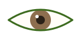
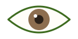
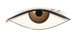

Eye Shape Guide눈매 가이드目もとガイド眼型指南眼型指南Guía de forma de ojosPanduan Bentuk Mata
Your eyes are measured on three independent axes — tilt, proportion and lid coverage. Each is an impression type, never a score.눈매는 서로 독립적인 세 축 — 눈꼬리 각도·비율·눈꺼풀 덮임 — 으로 측정돼요. 우열이 아니라 인상의 유형입니다.目もとは独立した3つの軸（目尻の角度・比率・まぶたの被り）で測定します。優劣ではなく印象のタイプです。眼型由三个独立维度测量：眼尾角度、比例、眼睑覆盖。这是印象类型，不是评分。眼型由三個獨立維度測量：眼尾角度、比例、眼瞼覆蓋。這是印象類型，不是評分。Tus ojos se miden en tres ejes independientes: inclinación, proporción y cobertura del párpado. Son tipos de impresión, no puntuaciones.Matamu diukur pada tiga sumbu independen — kemiringan, proporsi, dan tutupan kelopak. Masing-masing adalah tipe kesan, bukan skor.
You'll jump to your measured type automatically. Terms differ by country, so each type shows both the Korean and the international name.측정된 내 유형으로 자동 이동해요. 나라마다 부르는 말이 달라서 한국식 표현과 국제 표현을 함께 적어 두었습니다.測定されたタイプへ自動で移動します。国によって呼び方が違うため、韓国式と国際的な呼称を併記しています。会自动跳到你的测量类型。各国叫法不同，因此同时标注韩式与国际通用名称。會自動跳到你的測量類型。各國叫法不同，因此同時標註韓式與國際通用名稱。Saltarás automáticamente a tu tipo medido. Los términos varían según el país, así que mostramos el nombre coreano y el internacional.Kamu akan langsung diarahkan ke tipe hasil pengukuranmu. Istilah berbeda di tiap negara, jadi tiap tipe menampilkan nama Korea dan nama internasionalnya.
The line from inner to outer corner. This axis drives the "gentle vs. sharp" impression more than anything else.눈머리에서 눈꼬리로 이어지는 선의 기울기예요. '순한 인상'과 '또렷한 인상'을 가장 크게 가르는 축입니다.目頭から目尻へのラインの傾き。「優しい印象」と「くっきりした印象」を最も大きく分ける軸です。从内眼角到外眼角连线的倾斜度，最能左右“温柔”与“利落”的印象。從內眼角到外眼角連線的傾斜度，最能左右「溫柔」與「俐落」的印象。La línea del lagrimal al rabillo. Este eje define la impresión "dulce" o "marcada" más que ningún otro.Garis dari sudut dalam ke sudut luar. Sumbu ini paling menentukan kesan "lembut vs. tajam" dibanding apa pun.
Measured against the iris centre line — the value stays the same even if you tilt your head.홍채 중심선을 기준으로 재기 때문에 고개를 기울여도 값이 변하지 않아요.虹彩の中心線を基準に測るため、顔を傾けても値は変わりません。以虹膜中心线为基准测量，即使歪头数值也不变。以虹膜中心線為基準測量，即使歪頭數值也不變。Se mide respecto a la línea central del iris: el valor no cambia aunque inclines la cabeza.Diukur terhadap garis tengah iris — nilainya tetap sama meski kepalamu miring.
In Korea: 강아지상 (gang-a-ji-sang, "puppy eyes")국제 표현: Downturned eyes国際的には Downturned eyes／韓国では 강아지상国际称 Downturned eyes／韩国称 강아지상（小狗眼）國際稱 Downturned eyes／韓國稱 강아지상（小狗眼）En inglés: Downturned · en Corea: 강아지상Di Korea: 강아지상 (gang-a-ji-sang, "mata anak anjing")
Measured tilt below 5.5°측정 각도 5.5° 미만測定角度 5.5° 未満测量角度低于 5.5°測量角度低於 5.5°Inclinación medida menor a 5,5°Kemiringan terukur di bawah 5,5°
The outer corner sits level with — or slightly below — the inner corner. It reads as soft, calm and approachable, and tends to photograph well in candid shots.눈꼬리가 눈머리와 수평이거나 살짝 아래에 있어요. 부드럽고 편안한 인상을 주고, 자연스러운 스냅 사진에서 특히 매력적으로 담깁니다.目尻が目頭と水平か、やや下にあります。柔らかく穏やかな印象で、自然なスナップ写真によく映えます。外眼角与内眼角持平或略低，给人柔和、亲切的印象，抓拍时尤其上镜。外眼角與內眼角持平或略低，給人柔和、親切的印象，抓拍時尤其上鏡。El rabillo queda al nivel del lagrimal o algo más bajo. Transmite suavidad y cercanía, y luce muy bien en fotos espontáneas.Sudut luar sejajar dengan — atau sedikit di bawah — sudut dalam. Terkesan lembut, tenang, dan mudah didekati, dan cenderung bagus di foto candid.
Makeup that works with it이 눈매를 살리는 메이크업この目もとを活かすメイク适合的妆容適合的妝容Maquillaje que le favoreceMakeup yang cocok
Finish the liner 2–3 mm past the outer corner, angled slightly upward — a flat or downward flick deepens the droop.
Curl lashes hard at the centre and outer third; skip a heavy lower line, which pulls the eye down further.
아이라인은 눈꼬리에서 2~3mm 살짝 위로 올려 마무리하세요. 수평이나 아래로 빼면 처짐이 강조됩니다.
속눈썹은 중앙~바깥 1/3을 강하게 컬링하고, 아래 라인은 진하게 그리지 않는 편이 좋아요.
アイラインは目尻から2〜3mm、やや上向きに。水平や下向きだと、たれ感が強調されます。
まつ毛は中央〜外側1/3をしっかりカール。下ラインを濃くすると下がって見えます。
眼线在外眼角外延伸 2–3mm 并略微上扬；平拉或下垂会强化下垂感。
睫毛重点夹翘中段与外侧 1/3；下眼线不宜过重，否则更显下垂。
眼線在外眼角外延伸 2–3mm 並略微上揚；平拉或下垂會強化下垂感。
睫毛重點夾翹中段與外側 1/3；下眼線不宜過重，否則更顯下垂。
Termina el delineado 2–3 mm más allá del rabillo, con una leve subida; plano o hacia abajo acentúa la caída.
Riza las pestañas del centro al tercio exterior y evita una línea inferior muy marcada.
Akhiri eyeliner 2–3 mm melewati sudut luar, sedikit miring ke atas — sapuan datar atau ke bawah memperdalam kesan menurun.
Jepit bulu mata dengan kuat di bagian tengah dan sepertiga luar; hindari garis bawah yang tebal, karena menarik mata makin ke bawah.

Balanced균형 잡힌 눈매バランス型均衡型均衡型EquilibradoSeimbang
Neutral tilt — the population average sits here국제 표현: Balanced / neutral tilt — 인구 평균대가 여기예요国際的には Balanced tilt — 人口の平均帯がここです国际称 Balanced tilt — 人群平均值位于此区间國際稱 Balanced tilt — 人群平均值位於此區間Inclinación neutra: aquí está la media poblacionalKemiringan netral — rata-rata populasi ada di sini
Neither soft nor sharp by default — which means your look changes the most with makeup. You can borrow from either of the other two types depending on the impression you want that day.기본값이 한쪽으로 치우치지 않아서, 메이크업에 따라 인상이 가장 크게 달라지는 타입이에요. 그날 원하는 느낌에 맞춰 위·아래 두 유형의 방법을 골라 쓰면 됩니다.どちらにも偏らないため、メイクで印象が最も大きく変わるタイプ。その日の気分で他の2タイプの手法を使い分けられます。默认不偏向任何一侧，因此妆容带来的变化最大。可按当天想要的感觉，借用另外两种类型的手法。預設不偏向任何一側，因此妝容帶來的變化最大。可按當天想要的感覺，借用另外兩種類型的手法。Ni dulce ni marcado por defecto, así que el maquillaje es lo que más cambia tu mirada. Puedes tomar recursos de los otros dos tipos según el día.Tidak lembut maupun tajam secara bawaan — artinya tampilanmu paling banyak berubah dengan makeup. Kamu bisa meminjam teknik dari dua tipe lainnya tergantung kesan yang kamu inginkan hari itu.
Makeup that works with it이 눈매를 살리는 메이크업この目もとを活かすメイク适合的妆容適合的妝容Maquillaje que le favoreceMakeup yang cocok
Want softer? Extend the liner straight out. Want sharper? Lift the tail 5 mm. Both read naturally on you.
Because the baseline is neutral, changing only the brow angle already shifts the whole impression.
순한 느낌을 원하면 라인을 수평으로, 또렷한 느낌을 원하면 눈꼬리를 5mm 정도 올려 빼세요. 둘 다 자연스럽게 소화됩니다.
기준선이 중립이라 눈썹 각도만 바꿔도 인상 전체가 달라져요.
優しくしたい日はラインを水平に、くっきりさせたい日は目尻を5mm上げて。どちらも自然です。
ベースが中立なので、眉の角度を変えるだけで印象全体が変わります。
想柔和就把眼线平拉；想利落就把眼尾上扬约 5mm，两种都很自然。
因为基准中性，仅调整眉形角度就能改变整体印象。
想柔和就把眼線平拉；想俐落就把眼尾上揚約 5mm，兩種都很自然。
因為基準中性，僅調整眉形角度就能改變整體印象。
¿Más dulce? Delineado recto. ¿Más marcado? Eleva el rabillo 5 mm. Ambos te quedan naturales.
Al ser una base neutra, cambiar solo el ángulo de las cejas ya transforma la mirada.
Ingin lebih lembut? Tarik eyeliner lurus keluar. Ingin lebih tajam? Angkat ekornya 5 mm. Keduanya terlihat alami padamu.
Karena dasarnya netral, mengubah sudut alis saja sudah menggeser keseluruhan kesan.
Measured tilt above 8°측정 각도 8° 초과測定角度 8° 超测量角度高于 8°測量角度高於 8°Inclinación medida mayor a 8°Kemiringan terukur di atas 8°
The outer corner lifts clearly above the inner one — a crisp, wide-awake look that holds up in bright light and on camera. The usual pitfall is pushing it further until it turns severe.눈꼬리가 눈머리보다 뚜렷하게 올라가 있어요. 또렷하고 시원한 인상이라 밝은 조명이나 카메라 앞에서 특히 강점을 발휘합니다. 흔한 실수는 여기서 더 강조하다가 날카로워지는 것이에요.目尻が目頭よりはっきり上がっています。くっきりと涼しげな印象で、明るい照明やカメラ前で強みを発揮。ありがちな失敗は、さらに強調して鋭くなりすぎることです。外眼角明显高于内眼角，利落而有神，在强光和镜头前尤其出彩。常见误区是继续强化，反而显得凌厉。外眼角明顯高於內眼角，俐落而有神，在強光和鏡頭前尤其出彩。常見誤區是繼續強化，反而顯得凌厲。El rabillo se eleva claramente sobre el lagrimal: mirada nítida y despierta, muy fotogénica. El error habitual es reforzarla aún más hasta volverla dura.Sudut luar terangkat jelas di atas sudut dalam — tampilan tegas dan segar yang tetap bagus di cahaya terang dan di kamera. Jebakan umumnya adalah mendorongnya lebih jauh sampai terkesan galak.
Makeup that works with it이 눈매를 살리는 메이크업この目もとを活かすメイク适合的妆容適合的妝容Maquillaje que le favoreceMakeup yang cocok
Stop the liner within about 3 mm of the outer corner. A long wing stacks on top of a lift you already have.
Add a light shade to the centre of the lid and a soft lower line on the outer third only — it rounds the eye and softens the edge.
아이라인은 눈꼬리에서 3mm 안쪽에서 멈추세요. 이미 올라간 눈에 긴 윙을 더하면 과해집니다.
눈두덩 중앙에 밝은 톤을 올리고, 아래 라인은 바깥 1/3에만 은은하게 — 둥근 느낌이 더해져 부드러워져요.
アイラインは目尻から3mm以内で止めて。上がった目に長いウイングは過剰です。
まぶた中央に明るい色をのせ、下ラインは外側1/3だけ薄く。丸みが出て柔らかくなります。
眼线在外眼角 3mm 以内收尾；本就上扬的眼型再加长眼尾会过度。
眼皮中央提亮，下眼线只画外侧 1/3，增加圆润感、柔化锐利。
眼線在外眼角 3mm 以內收尾；本就上揚的眼型再加長眼尾會過度。
眼皮中央提亮，下眼線只畫外側 1/3，增加圓潤感、柔化銳利。
Detén el delineado a unos 3 mm del rabillo: un ala larga suma a una elevación que ya tienes.
Ilumina el centro del párpado y marca solo el tercio exterior inferior: redondea y suaviza la mirada.
Hentikan eyeliner sekitar 3 mm dari sudut luar. Sayap panjang menumpuk di atas angkatan yang sudah kamu miliki.
Tambahkan warna terang di tengah kelopak dan garis bawah lembut hanya di sepertiga luar — membulatkan mata dan melembutkan tepinya.
2 · Eye proportion2 · 눈매 비율2 · 目の比率2 · 眼型比例2 · 眼型比例2 · Proporción del ojo2 · Proporsi mata
Width divided by height of the eye opening. This is the axis where Korean and Western vocabulary diverge the most.눈꺼풀 틈의 가로 ÷ 세로예요. 한국식 표현과 서구식 표현이 가장 많이 엇갈리는 축이기도 합니다.まぶたの開きの横÷縦です。韓国式と欧米式の呼び方が最も食い違う軸でもあります。睑裂宽度 ÷ 高度。这也是韩式与欧美说法差异最大的一个维度。瞼裂寬度 ÷ 高度。這也是韓式與歐美說法差異最大的一個維度。Ancho dividido por alto de la abertura ocular. Es el eje donde más difieren el vocabulario coreano y el occidental.Lebar dibagi tinggi bukaan mata. Ini sumbu tempat kosakata Korea dan Barat paling berbeda.
Shoot straight on — turning your head shortens the width only, which makes the eye look rounder than it is.정면으로 촬영하세요. 고개가 돌아가면 가로만 짧아 보여서 실제보다 동그랗게 측정됩니다.正面で撮影してください。顔が横を向くと横幅だけ短く写り、実際より丸く測定されます。请正面拍摄。侧头时只有横向变短，会比实际测得更圆。請正面拍攝。側頭時只有橫向變短，會比實際測得更圓。Fotografía de frente: al girar la cabeza solo se acorta el ancho y el ojo parece más redondo de lo que es.Foto lurus dari depan — memutar kepala hanya memendekkan lebar, sehingga mata terlihat lebih bulat dari aslinya.

Round동그란 눈매丸目圆眼圓眼RedondoBulat
Also called doe eyes · in Korea: 동그란 눈 or 사슴상 (sa-seum-sang, "deer")국제 표현: Round eyes / doe eyes — 한국에서는 '사슴상'이라고도 해요国際的には Round / doe eyes ／韓国では 사슴상（鹿目）とも国际称 Round / doe eyes／韩国也称 사슴상（鹿眼）國際稱 Round / doe eyes／韓國也稱 사슴상（鹿眼）También doe eyes · en Corea: 사슴상 ("ojos de ciervo")Disebut juga doe eyes · di Korea: 동그란 눈 atau 사슴상 (sa-seum-sang, "rusa")
Width ÷ height below 2.65가로÷세로 2.65 미만横÷縦 2.65 未満宽÷高 低于 2.65寬÷高 低於 2.65Ancho ÷ alto menor a 2,65Lebar ÷ tinggi di bawah 2,65
The opening is tall relative to its width, so the iris shows more of its circle. It reads as bright, youthful and expressive — the eye looks larger than its actual measurement.가로에 비해 세로가 열려 있어 홍채가 더 동그랗게 드러나요. 밝고 어려 보이는 인상이라, 실제 크기보다 눈이 커 보이는 이점이 있습니다.横幅に対して縦に開いており、虹彩が丸く見えます。明るく若々しい印象で、実寸より目が大きく見えるのが強みです。相对宽度而言纵向更开，虹膜露出更圆。显得明亮、年轻、有表现力，看起来比实际尺寸更大。相對寬度而言縱向更開，虹膜露出更圓。顯得明亮、年輕、有表現力，看起來比實際尺寸更大。La abertura es alta respecto a su ancho y el iris se ve más circular. Da una mirada luminosa y juvenil: el ojo parece mayor de lo que mide.Bukaan mata tinggi relatif terhadap lebarnya, sehingga lingkaran iris lebih banyak terlihat. Terkesan cerah, muda, dan ekspresif — mata terlihat lebih besar dari ukuran sebenarnya.
Makeup that works with it이 눈매를 살리는 메이크업この目もとを活かすメイク适合的妆容適合的妝容Maquillaje que le favoreceMakeup yang cocok
Work horizontally: carry the liner 3–4 mm past the outer corner and keep shadow concentrated on the outer half.
Longer lashes at the outer edge stretch the shape; even lashes all round emphasise the circle.
가로로 늘리는 방향이 핵심 — 아이라인을 눈꼬리 밖으로 3~4mm 빼고, 섀도는 바깥쪽 절반에 집중하세요.
속눈썹은 바깥쪽만 길게. 전체를 균일하게 올리면 동그란 느낌이 더 강조됩니다.
横方向に伸ばすのが鍵。アイラインを目尻から3〜4mm出し、シャドウは外側半分に集中。
まつ毛は外側だけ長く。全体を均一に上げると丸さが強調されます。
重点是横向延伸：眼线出眼尾 3–4mm，眼影集中在外半段。
睫毛只加长外侧；整体均匀反而强化圆形感。
重點是橫向延伸：眼線出眼尾 3–4mm，眼影集中在外半段。
睫毛只加長外側；整體均勻反而強化圓形感。
Trabaja en horizontal: prolonga el delineado 3–4 mm y concentra la sombra en la mitad exterior.
Pestañas más largas solo en el extremo exterior; uniformes acentúan el círculo.
Kerjakan secara horizontal: tarik eyeliner 3–4 mm melewati sudut luar dan pusatkan shadow di separuh luar.
Bulu mata yang lebih panjang di tepi luar memanjangkan bentuknya; bulu mata yang rata di seluruh bagian menonjolkan lingkarannya.
Between the two그 중간その中間介于两者之间介於兩者之間Entre ambosDi antara keduanya
Not a separate shape — a buffer band, so a slightly angled photo is never labelled as a type별도의 유형이 아니라 완충 구간이에요 — 살짝 비스듬한 사진을 단정하지 않기 위한 밴드입니다独立したタイプではなく緩衝帯です — 少し斜めの写真を断定しないための区間です这不是独立类型，而是缓冲区间：避免把略微侧脸的照片武断归类這不是獨立類型，而是緩衝區間：避免把略微側臉的照片武斷歸類No es una forma aparte, sino una banda de seguridad para no etiquetar fotos algo giradasBukan bentuk terpisah — zona penyangga, agar foto yang sedikit miring tidak langsung dilabeli sebagai satu tipe
You sit between round and almond, so both sets of techniques below will suit you. If you keep landing here, try a few measurements facing the camera squarely in even light — the value often settles toward one side.동그란 눈매와 갸름한 눈매 사이라, 아래 두 유형의 방법이 모두 어울려요. 계속 이 구간이 나온다면 균일한 조명에서 정면으로 몇 번 더 측정해 보세요. 대개 한쪽으로 값이 정리됩니다.丸目とアーモンドの中間なので、両方の手法が使えます。この帯が続く場合は、均一な光で正面から数回測ってみてください。多くはどちらかに寄ります。介于圆眼与杏仁眼之间，两类技巧都适用。若一直落在此区间，请在均匀光线下正面多测几次，数值通常会偏向一侧。介於圓眼與杏仁眼之間，兩類技巧都適用。若一直落在此區間，請在均勻光線下正面多測幾次，數值通常會偏向一側。Estás entre redondo y almendrado, así que ambas técnicas te sirven. Si siempre caes aquí, mide varias veces de frente con luz pareja: el valor suele definirse.Kamu berada di antara bulat dan almond, jadi kedua set teknik di bawah cocok untukmu. Jika terus mendarat di sini, coba beberapa pengukuran menghadap kamera lurus dalam cahaya merata — nilainya sering menetap ke salah satu sisi.
In Korea this is 갸름한 눈매 / 切れ長 in Japan — described as "long and tapered" rather than by a nut'아몬드(almond)'는 서구권 뷰티에서 가장 널리 쓰는 기준 표현이에요. 우리말의 '길고 갸름한 눈'에 해당합니다英語の「almond（アーモンド）」は欧米で最も標準的な呼称で、日本語の「切れ長」にあたります英文 almond（杏仁）是欧美最通用的说法，对应中文的“细长眼”英文 almond（杏仁）是歐美最通用的說法，對應中文的「細長眼」En Corea: 갸름한 눈매 (alargado y afilado), la misma forma con otro nombreDi Korea disebut 갸름한 눈매 / 切れ長 di Jepang — digambarkan sebagai "panjang dan meruncing", bukan dengan nama kacang
Width ÷ height above 2.80가로÷세로 2.80 초과横÷縦 2.80 超宽÷高 高于 2.80寬÷高 高於 2.80Ancho ÷ alto mayor a 2,80Lebar ÷ tinggi di atas 2,80
A long opening with a gentle taper at both corners. Western beauty writing treats this as the reference shape, and East Asian writing praises the same look as 갸름한 / 切れ長 — a composed, mature impression that suits strong liner and minimal makeup equally.눈이 길게 열리고 양쪽 끝이 부드럽게 좁아지는 형태예요. 서구권에서는 이 모양을 기준형으로 두고, 동아시아에서는 '갸름한 눈매'로 선호해 왔습니다 — 부르는 말이 다를 뿐 같은 눈매예요. 차분하고 성숙한 인상이라 진한 라인도, 노메이크업도 잘 어울립니다.横に長く開き、両端がなだらかに細くなる形。欧米では基準形とされ、東アジアでは「切れ長」として好まれてきました — 呼び名が違うだけで同じ目もとです。落ち着いた印象で、濃いラインもすっぴん風も似合います。眼裂细长、两端自然收窄。欧美视其为基准眼型，东亚则称“细长眼”并同样偏爱——只是叫法不同。气质沉稳成熟，浓眼线与淡妆都驾驭得住。眼裂細長、兩端自然收窄。歐美視其為基準眼型，東亞則稱「細長眼」並同樣偏愛——只是叫法不同。氣質沉穩成熟，濃眼線與淡妝都駕馭得住。Abertura alargada que se afina en ambos extremos. Occidente la toma como forma de referencia y en Asia Oriental se aprecia como 갸름한/切れ長: el mismo ojo con otro nombre. Da una mirada serena y madura.Bukaan panjang dengan runcingan lembut di kedua sudut. Tulisan kecantikan Barat menjadikannya bentuk acuan, dan tulisan Asia Timur memuji tampilan yang sama sebagai 갸름한 / 切れ長 — kesan tenang dan dewasa yang sama cocoknya dengan eyeliner tegas maupun makeup minimal.
Makeup that works with it이 눈매를 살리는 메이크업この目もとを活かすメイク适合的妆容適合的妝容Maquillaje que le favoreceMakeup yang cocok
Add height, not length: a light shade in the centre of the lid and a soft under-eye highlight open the shape vertically.
Curl the centre lashes most. Extending the liner outward is the one move that can make the eye look narrow.
길이보다 세로 폭을 더하세요 — 눈두덩 중앙에 밝은 톤, 눈 밑에 은은한 하이라이트를 넣으면 시원해 보입니다.
속눈썹은 중앙을 가장 강하게 컬링. 라인을 바깥으로 길게 빼는 것만이 눈을 좁아 보이게 하는 유일한 실수예요.
長さより縦幅を。まぶた中央に明るい色、目の下にほんのりハイライトで開放感が出ます。
まつ毛は中央を最も強くカール。ラインを外へ長く引くのだけは、目が細く見える原因になります。
补纵向而非横向：眼皮中央提亮、下眼睑淡淡打亮，眼睛更开阔。
睫毛重点夹翘中段；唯一要避免的是把眼线往外拉长，会显得眼睛更窄。
補縱向而非橫向：眼皮中央提亮、下眼瞼淡淡打亮，眼睛更開闊。
睫毛重點夾翹中段；唯一要避免的是把眼線往外拉長，會顯得眼睛更窄。
Suma altura, no largo: tono claro en el centro del párpado y un toque de iluminador bajo el ojo.
Riza sobre todo las pestañas centrales; alargar el delineado hacia fuera es lo único que estrecha la mirada.
Tambahkan tinggi, bukan panjang: warna terang di tengah kelopak dan highlight lembut di bawah mata membuka bentuknya secara vertikal.
Jepit bulu mata tengah paling kuat. Memanjangkan eyeliner ke luar adalah satu-satunya langkah yang bisa membuat mata terlihat sempit.
3 · Lid coverage3 · 눈꺼풀 덮임3 · まぶたの被り3 · 眼睑覆盖3 · 眼瞼覆蓋3 · Cobertura del párpado3 · Tutupan kelopak
How much of the iris the upper lid rests over. This is the axis most affected by sleep, swelling and age — the best one to track over time.윗눈꺼풀이 홍채를 얼마나 덮고 있는지예요. 수면·붓기·나이의 영향을 가장 많이 받는 축이라, 장기 변화를 지켜보기에 가장 좋습니다.上まぶたが虹彩をどれだけ覆っているか。睡眠・むくみ・加齢の影響を最も受ける軸で、経過観察に最適です。上眼睑覆盖虹膜的程度。这一维度最易受睡眠、水肿与年龄影响，最适合长期追踪。上眼瞼覆蓋虹膜的程度。這一維度最易受睡眠、水腫與年齡影響，最適合長期追蹤。Cuánto cubre el párpado superior al iris. Es el eje más sensible al sueño, la hinchazón y la edad: ideal para seguir su evolución.Seberapa banyak iris yang tertutup kelopak atas. Ini sumbu yang paling dipengaruhi tidur, bengkak, dan usia — yang paling layak dilacak dari waktu ke waktu.
Reported together with MRD1, the same measurement expressed as a distance in millimetres.같은 현상을 mm 거리로 표현한 MRD1 값과 함께 표시됩니다.同じ現象をmmの距離で表したMRD1と併せて表示されます。与 MRD1 一并显示，后者是同一测量的毫米距离表示。與 MRD1 一併顯示，後者是同一測量的毫米距離表示。Se muestra junto con MRD1, la misma medida expresada en milímetros.Dilaporkan bersama MRD1, pengukuran yang sama yang dinyatakan sebagai jarak dalam milimeter.
Bright, open eyes시원하게 열린 눈매ぱっちり開いた目もと明亮开阔的眼型明亮開闊的眼型Mirada abierta y luminosaMata cerah dan terbuka
Low lid coverage · in Korea often described as 또렷한 눈국제 표현: Low lid coverage / open eyes国際的には low lid coverage（開きが大きい）国际称 low lid coverage（眼睑覆盖少）國際稱 low lid coverage（眼瞼覆蓋少）Baja cobertura palpebralTutupan kelopak rendah · di Korea sering digambarkan sebagai 또렷한 눈
Coverage below 12%덮임 12% 미만被り 12% 未満覆盖率低于 12%覆蓋率低於 12%Cobertura menor al 12 %Tutupan di bawah 12%
The upper lid barely rests on the iris, so the eye reads wide awake. There is plenty of visible lid space, which means eyeshadow shows fully — gradients need to be blended more carefully than on other types.윗눈꺼풀이 홍채를 거의 덮지 않아 또렷하고 시원해 보여요. 보이는 눈두덩 면적이 넓어서 섀도가 그대로 드러나는 만큼, 그라데이션을 다른 유형보다 꼼꼼히 펴 주는 게 좋습니다.上まぶたが虹彩にほとんど掛からず、ぱっちりした印象。見えるまぶたの面積が広くシャドウがそのまま出るため、他タイプより丁寧なぼかしが必要です。上眼睑几乎不压虹膜，显得炯炯有神。可见眼皮面积大，眼影会完整呈现，因此更需仔细晕染。上眼瞼幾乎不壓虹膜，顯得炯炯有神。可見眼皮面積大，眼影會完整呈現，因此更需仔細暈染。El párpado apenas cubre el iris: mirada muy despierta. Hay bastante párpado visible, así que la sombra se ve entera y conviene difuminar con más cuidado.Kelopak atas nyaris tidak menyentuh iris, sehingga mata terkesan sangat terjaga. Ruang kelopak yang terlihat sangat luas, artinya eyeshadow tampil penuh — gradasi perlu dibaurkan lebih hati-hati dibanding tipe lain.
Makeup that works with it이 눈매를 살리는 메이크업この目もとを活かすメイク适合的妆容適合的妝容Maquillaje que le favoreceMakeup yang cocok
Keep the upper line thin — a thick line eats the openness that is your strength.
A medium tone in the crease adds depth so the wide lid doesn't look flat under strong light.
윗라인은 얇게. 두꺼운 라인은 이 눈매의 강점인 개방감을 깎아먹어요.
쌍꺼풀 라인 위쪽에 중간 톤을 얹어 깊이를 주면, 강한 조명에서도 눈두덩이 밋밋해 보이지 않습니다.
上ラインは細く。太いラインは持ち味の開放感を損ないます。
二重の上に中間色をのせて奥行きを。強い照明でものっぺり見えません。
上眼线要细；过粗会削弱这类眼型的开阔感。
在双眼皮褶皱上方叠中间色制造层次，强光下也不会显得扁平。
上眼線要細；過粗會削弱這類眼型的開闊感。
在雙眼皮褶皺上方疊中間色製造層次，強光下也不會顯得扁平。
Delineado superior fino: uno grueso se come la apertura que es tu punto fuerte.
Un tono medio en la cuenca aporta profundidad y evita que el párpado se vea plano.
Jaga garis atas tetap tipis — garis tebal memakan keterbukaan yang menjadi kekuatanmu.
Warna sedang di lipatan kelopak menambah kedalaman agar kelopak yang lebar tidak terlihat datar di bawah cahaya kuat.
Typical lid coverage — the most common band국제 표현: Typical lid coverage — 가장 흔한 구간이에요国際的には typical lid coverage — 最も多い帯です国际称 typical lid coverage — 最常见的区间國際稱 typical lid coverage — 最常見的區間Cobertura típica: la banda más comúnTutupan kelopak tipikal — rentang paling umum
A comfortable middle. Watch this number rather than its label: a drop of several points from your own baseline usually means fatigue or swelling, not a change in shape.가장 편안한 중간값이에요. 라벨보다 숫자의 변화를 보세요. 평소 내 값에서 몇 %p 떨어졌다면 눈매가 변한 게 아니라 피로나 붓기일 가능성이 큽니다.最も落ち着いた中間値。ラベルより数値の変化に注目を。普段の値から数ポイント下がっていれば、形の変化ではなく疲れやむくみのことが多いです。最舒适的中间值。请关注数值变化而非标签：比平时低几个百分点，多半是疲劳或水肿，而非眼型改变。最舒適的中間值。請關注數值變化而非標籤：比平時低幾個百分點，多半是疲勞或水腫，而非眼型改變。Un punto medio cómodo. Fíjate en el cambio más que en la etiqueta: bajar unos puntos respecto a tu base suele indicar cansancio o hinchazón.Posisi tengah yang nyaman. Perhatikan angkanya, bukan labelnya: penurunan beberapa poin dari dasarmu sendiri biasanya berarti kelelahan atau bengkak, bukan perubahan bentuk.

Deep-set look그윽한 눈매奥行きのある目もと深邃眼型深邃眼型Mirada profundaTampilan mata dalam
Hooded / deep-set · common with 무쌍 (monolid) and 속쌍 (hidden crease)국제 표현: Hooded / deep-set eyes — 무쌍·속쌍에서 흔히 나오는 값이에요国際的には hooded / deep-set eyes — 一重・奥二重に多い値です国际称 hooded / deep-set eyes — 单眼皮、内双常见國際稱 hooded / deep-set eyes — 單眼皮、內雙常見Hooded / deep-set · frecuente con monolid (무쌍) y pliegue oculto (속쌍)Hooded / deep-set · umum pada 무쌍 (monolid) dan 속쌍 (lipatan tersembunyi)
Coverage above 25%덮임 25% 초과被り 25% 超覆盖率高于 25%覆蓋率高於 25%Cobertura mayor al 25 %Tutupan di atas 25%
The upper lid sits over a good part of the iris, giving a calm, composed depth. The practical catch is that most makeup tutorials are shot on visible-crease eyes, so the usual instructions disappear once you open your eyes.윗눈꺼풀이 홍채를 넉넉히 덮어 차분하고 깊이 있는 인상을 줍니다. 현실적인 문제는 대부분의 메이크업 튜토리얼이 겉쌍 눈을 기준으로 촬영된다는 점이에요 — 그대로 따라 하면 눈을 떴을 때 안 보입니다.上まぶたが虹彩をしっかり覆い、落ち着いた奥行きのある印象に。問題は、多くのメイク動画が二重の目を基準にしていること — そのまま真似ると目を開けたとき見えません。上眼睑覆盖较多虹膜，显得沉稳深邃。现实问题在于多数教程以双眼皮拍摄，照做后睁眼便看不见。上眼瞼覆蓋較多虹膜，顯得沉穩深邃。現實問題在於多數教學以雙眼皮拍攝，照做後睜眼便看不見。El párpado cubre buena parte del iris y aporta profundidad serena. El problema práctico: casi todos los tutoriales se graban en ojos con pliegue visible y, al abrir los tuyos, el maquillaje desaparece.Kelopak atas menutupi sebagian besar iris, memberi kedalaman yang tenang dan terkendali. Tantangan praktisnya: kebanyakan tutorial makeup dibuat pada mata berlipatan terlihat, jadi instruksi biasa menghilang begitu kamu membuka mata.
Makeup that works with it이 눈매를 살리는 메이크업この目もとを活かすメイク适合的妆容適合的妝容Maquillaje que le favoreceMakeup yang cocok
Draw with your eyes open, not closed, and place colour only where it still shows.
Curl lashes hard and use a smudge-proof formula; matte shadow holds better than shimmer against the lid.
눈을 뜬 상태에서 그리세요. 감고 그리면 떴을 때 다 가려집니다. 보이는 위치에만 색을 올리는 게 핵심이에요.
속눈썹은 강하게 컬링하고 번짐에 강한 제형으로. 눈꺼풀이 닿는 부위엔 펄보다 매트가 오래갑니다.
目を開けた状態で描き、見える位置だけに色をのせるのがコツ。
まつ毛はしっかりカール、滲みにくい処方で。触れる部分はラメよりマットが持ちます。
睁眼画，只在睁眼时可见的位置上色。
睫毛用力夹翘并选防晕染配方；接触眼皮处哑光比珠光更持久。
睜眼畫，只在睜眼時可見的位置上色。
睫毛用力夾翹並選防暈染配方；接觸眼皮處霧面比珠光更持久。
Maquíllate con los ojos abiertos y coloca el color solo donde siga viéndose.
Riza bien las pestañas y usa fórmulas a prueba de transferencia; el mate aguanta mejor que el brillo.
Gambar dengan mata terbuka, bukan tertutup, dan letakkan warna hanya di tempat yang masih terlihat.
Jepit bulu mata dengan kuat dan gunakan formula tahan luntur; shadow matte lebih bertahan di kelopak dibanding shimmer.
Terms across languages나라별 용어 사전国ごとの用語辞典跨语言术语对照跨語言術語對照Términos entre idiomasIstilah lintas bahasa
Korean beauty vocabulary describes eyes by impression; Western vocabulary describes them by geometry. Same eyes, different maps.한국 뷰티 용어는 '인상'으로, 서구 용어는 '형태'로 눈매를 부릅니다. 같은 눈을 다른 지도로 그린 셈이에요.韓国の美容用語は「印象」で、欧米の用語は「形」で目を表します。同じ目を別の地図で描いているだけです。韩式美妆用语以“印象”命名，欧美用语以“几何形状”命名。同样的眼睛，不同的地图。韓式美妝用語以「印象」命名，歐美用語以「幾何形狀」命名。同樣的眼睛，不同的地圖。El vocabulario coreano describe los ojos por impresión; el occidental, por geometría. Los mismos ojos, mapas distintos.Kosakata kecantikan Korea menggambarkan mata berdasarkan kesan; kosakata Barat menggambarkannya berdasarkan geometri. Mata yang sama, peta yang berbeda.
강아지상 · 고양이상gang-a-ji-sang · go-yang-i-sang
Downturned · Upturned
Literally "puppy type" and "cat type". They describe the tilt of the eye corners, not the shape of the eye — a puppy-type eye can still be almond.직역하면 '강아지 같은', '고양이 같은'. 눈의 모양이 아니라 눈꼬리 기울기를 가리키는 말이라, 강아지상이면서 갸름한 눈매일 수 있어요.直訳は「子犬っぽい」「猫っぽい」。目の形ではなく目尻の傾きを指すため、たれ目かつ切れ長もあり得ます。直译为“小狗型”“猫型”，指的是眼尾倾斜而非眼型，因此小狗眼也可以是杏仁眼。直譯為「小狗型」「貓型」，指的是眼尾傾斜而非眼型，因此小狗眼也可以是杏仁眼。Literalmente "tipo cachorro" y "tipo gato": describen la inclinación del rabillo, no la forma; un ojo caído puede ser almendrado.Secara harfiah "tipe anak anjing" dan "tipe kucing". Keduanya menggambarkan kemiringan sudut mata, bukan bentuk mata — mata tipe anak anjing tetap bisa berbentuk almond.
사슴상sa-seum-sang
Doe eyes · Round
"Deer type" — large, round, slightly downturned eyes. The closest English term is doe eyes.'사슴 같은' 눈. 크고 둥글며 눈꼬리가 살짝 내려간 인상을 말해요. 영어로는 doe eyes가 가장 가깝습니다.「鹿のような」目。大きく丸く、目尻がやや下がった印象。英語では doe eyes が近い表現です。“鹿眼”，大而圆、眼尾略垂。英文最接近的说法是 doe eyes。「鹿眼」，大而圓、眼尾略垂。英文最接近的說法是 doe eyes。"Tipo ciervo": ojos grandes, redondos y algo caídos. En inglés, doe eyes."Tipe rusa" — mata besar, bulat, sedikit menurun. Istilah Inggris terdekatnya adalah doe eyes.
무쌍 · 속쌍 · 겉쌍mu-ssang · sok-ssang · geot-ssang
Monolid · Hidden crease · Visible crease
No crease / a crease tucked under the lid when open / a crease visible when open. East Asian eyes span all three, and one eye can differ from the other.쌍꺼풀이 없는 눈 / 떴을 때 접혀 들어가는 속쌍 / 떴을 때도 보이는 겉쌍. 세 가지가 모두 흔하고, 좌우가 서로 다른 경우도 많아요.二重のない目／開けると隠れる奥二重／開けても見える二重。三つとも一般的で、左右で違うこともよくあります。无褶皱／睁眼时隐藏的内双／睁眼可见的外双。三者都很常见，左右眼不同也很普遍。無褶皺／睜眼時隱藏的內雙／睜眼可見的外雙。三者都很常見，左右眼不同也很普遍。Sin pliegue / pliegue oculto al abrir / pliegue visible. Los tres son comunes y pueden diferir entre un ojo y otro.Tanpa lipatan / lipatan terselip di bawah kelopak saat mata terbuka / lipatan terlihat saat mata terbuka. Mata Asia Timur mencakup ketiganya, dan satu mata bisa berbeda dari mata lainnya.
애교살aegyo-sal
Lower-lid fullness
The small ridge of muscle right under the lash line that appears when you smile. It is not an eye bag: aegyo-sal sits directly against the lashes, while a bag sits lower and casts a shadow.웃을 때 아래 속눈썹 바로 밑에 생기는 작은 근육 볼륨이에요. 눈밑지방(다크서클)과는 다릅니다 — 애교살은 속눈썹에 붙어 있고, 눈밑지방은 더 아래에서 그림자를 만들어요.笑うと下まつ毛のすぐ下に現れる筋肉のふくらみ。目袋とは別物で、涙袋はまつ毛に接し、目袋はより下で影を作ります。微笑时下睫毛正下方浮现的小肌肉隆起。与眼袋不同：卧蚕紧贴睫毛，眼袋位置更低并投下阴影。微笑時下睫毛正下方浮現的小肌肉隆起。與眼袋不同：臥蠶緊貼睫毛，眼袋位置更低並投下陰影。El pequeño relieve muscular bajo las pestañas inferiores que aparece al sonreír. No es una bolsa: el aegyo-sal toca las pestañas; la bolsa queda más abajo y da sombra.Tonjolan kecil otot tepat di bawah garis bulu mata yang muncul saat tersenyum. Ini bukan kantung mata: aegyo-sal menempel langsung di bulu mata, sedangkan kantung mata berada lebih rendah dan menciptakan bayangan.
몽고주름mongo-jureum
Epicanthal fold
A small fold of skin covering the inner corner, present in most East Asian eyes. It makes the eye read shorter and the crease start higher.눈머리를 덮는 작은 피부 주름으로, 동아시아인에게 흔합니다. 눈이 짧아 보이고 쌍꺼풀 라인이 높은 곳에서 시작하게 만들어요.目頭を覆う小さな皮膚のひだ。東アジアに多く、目が短く見え、二重の始まりが高くなります。覆盖内眼角的小皮褶，东亚人常见。会让眼睛显短、双眼皮起点偏高。覆蓋內眼角的小皮褶，東亞人常見。會讓眼睛顯短、雙眼皮起點偏高。Pliegue cutáneo que cubre el lagrimal, común en ojos del este asiático. Acorta visualmente el ojo.Lipatan kecil kulit yang menutupi sudut dalam mata, ada pada kebanyakan mata Asia Timur. Membuat mata terkesan lebih pendek dan lipatan dimulai lebih tinggi.
앞트임 · 뒤트임ap-teurim · dwi-teurim
Epicanthoplasty · Lateral canthoplasty
Surgical terms you will meet in Korean beauty content: opening the inner corner and the outer corner. Listed here so the words are readable — not a recommendation.한국 뷰티 콘텐츠에서 자주 보이는 시술 용어로, 각각 눈머리와 눈꼬리를 트는 수술이에요. 용어 이해를 돕기 위한 설명이며 권유가 아닙니다.韓国の美容コンテンツで頻出する施術用語で、目頭と目尻を切開する手術です。用語理解のための記載で、推奨ではありません。韩国美妆内容中常见的手术用语，分别指开内眼角与开外眼角。此处仅作释义，并非建议。韓國美妝內容中常見的手術用語，分別指開內眼角與開外眼角。此處僅作釋義，並非建議。Términos quirúrgicos habituales en el contenido coreano: abrir el ángulo interno y el externo. Se explican para entenderlos, no como recomendación.Istilah bedah yang akan kamu temui di konten kecantikan Korea: membuka sudut dalam dan sudut luar. Dicantumkan di sini agar kata-katanya bisa dibaca — bukan rekomendasi.
Almond · Hooded영어권 표준 용어 / English terms
갸름한 눈매 · 그윽한 눈매
Western writing names shapes after objects (almond) and structure (hooded). Korean writing names the impression instead — which is why a direct word-for-word translation rarely exists.서구권은 사물(아몬드)과 구조(hooded, 덮인)로 이름을 붙이고, 한국은 인상으로 이름을 붙여요. 그래서 1:1로 딱 떨어지는 번역어가 없는 경우가 많습니다 — almond는 '길고 갸름한 눈', hooded는 '눈꺼풀이 덮인 그윽한 눈'으로 이해하면 됩니다.欧米は物（アーモンド）や構造（hooded＝被さった）で命名し、韓国は印象で命名します。そのため一対一の訳語がないことが多く、almond＝切れ長、hooded＝奥行きのある被さった目、と捉えると分かりやすいです。欧美以物体（杏仁）与结构（hooded＝被覆盖）命名，韩国则以印象命名，因此常无法逐字对应：almond 即“细长眼”，hooded 即“上睑覆盖的深邃眼”。歐美以物體（杏仁）與結構（hooded＝被覆蓋）命名，韓國則以印象命名，因此常無法逐字對應：almond 即「細長眼」，hooded 即「上瞼覆蓋的深邃眼」。Occidente nombra por objeto (almendra) y estructura (hooded); Corea, por impresión. Por eso rara vez hay traducción literal: almond ≈ ojo alargado; hooded ≈ ojo cubierto y profundo.Tulisan Barat menamai bentuk berdasarkan benda (almond) dan struktur (hooded). Tulisan Korea menamai kesannya — itu sebabnya terjemahan kata per kata hampir tidak pernah ada.
Getting an accurate reading정확하게 측정하려면正確に測るには如何测得更准如何測得更準Para una medición fiableMendapatkan pembacaan yang akurat
Face the camera squarely. A turned head shortens the width only, pushing the proportion toward "round".
Use even, neutral light. Strong side light deepens the crease shadow and inflates lid coverage.
Keep hair off the brows, look straight ahead, and don't widen your eyes on purpose.
Measure a few times across different days — the app uses the median of recent records so a single tired morning won't flip your type.
정면을 바라보세요. 고개가 돌아가면 가로만 짧아져 비율이 '동그란' 쪽으로 밀립니다.
균일하고 중성적인 조명에서. 측면 강한 빛은 쌍꺼풀 그림자를 깊게 만들어 덮임 값을 부풀립니다.
앞머리를 눈썹 위로 넘기고, 정면을 응시하되 일부러 크게 뜨지 마세요.
며칠에 걸쳐 여러 번 측정하세요. 앱은 최근 기록의 중앙값으로 유형을 정하므로, 피곤한 날 하루로 라벨이 바뀌지 않습니다.
正面を向いて。顔が横を向くと横幅だけ縮み、比率が「丸目」寄りになります。
均一で中性的な照明で。強い横光は二重の影を深くし、被り値を大きくします。
前髪を眉から上げ、正面を見て、意識して見開かないこと。
数日にわたり複数回測定を。アプリは直近記録の中央値を使うため、疲れた一日でタイプは変わりません。
正对镜头。侧头只会缩短横向，使比例偏向“圆眼”。
使用均匀中性的光线。强侧光会加深褶皱阴影，抬高覆盖率。
把刘海拨到眉毛以上，平视前方，不要刻意瞪大眼睛。
分几天多测几次。应用取近期记录的中位数，一天的疲惫不会改变类型。
正對鏡頭。側頭只會縮短橫向，使比例偏向「圓眼」。
使用均勻中性的光線。強側光會加深褶皺陰影，抬高覆蓋率。
把瀏海撥到眉毛以上，平視前方，不要刻意瞪大眼睛。
分幾天多測幾次。應用取近期紀錄的中位數，一天的疲憊不會改變類型。
Mira de frente: girar la cabeza acorta solo el ancho y empuja la proporción hacia "redondo".
Luz pareja y neutra. La luz lateral fuerte profundiza la sombra del pliegue e infla la cobertura.
Aparta el flequillo, mira al frente y no abras los ojos a propósito.
Mide varias veces en días distintos: la app usa la mediana reciente, así que un día de cansancio no cambia tu tipo.
Hadapi kamera lurus. Kepala yang menoleh hanya memendekkan lebar, mendorong proporsi ke arah "bulat".
Gunakan cahaya merata dan netral. Cahaya samping yang kuat memperdalam bayangan lipatan dan membesarkan tutupan kelopak.
Jauhkan rambut dari alis, lihat lurus ke depan, dan jangan sengaja membelalak.
Ukur beberapa kali di hari yang berbeda — aplikasi menggunakan median dari catatan terbaru sehingga satu pagi yang lelah tidak akan membalik tipemu.
Eye shape changes naturally with age, sleep and condition. These are impression types, not scores, and nothing here is a medical assessment. If one eye opens noticeably less than the other and it persists, an eye doctor is the right place to ask.눈매는 나이·수면·컨디션에 따라 자연스럽게 변하는 부위입니다. 좋고 나쁨이 아니라 인상의 유형이며, 의학적 판단이 아닙니다. 한쪽 눈이 눈에 띄게 덜 떠지는 상태가 지속된다면 안과에서 확인해 보세요.目もとは年齢・睡眠・体調で自然に変化します。優劣ではなく印象のタイプであり、医学的判断ではありません。片方だけ明らかに開きにくい状態が続く場合は眼科でご相談ください。眼型会随年龄、睡眠与身体状态自然变化。这是印象类型而非优劣评分，也不构成医学判断。若一侧眼睛明显睁不开且持续，请就医检查。眼型會隨年齡、睡眠與身體狀態自然變化。這是印象類型而非優劣評分，也不構成醫學判斷。若一側眼睛明顯睜不開且持續，請就醫檢查。La forma de los ojos cambia con la edad, el sueño y el estado físico. Son tipos de impresión, no puntuaciones, y no constituyen un diagnóstico médico. Si un ojo se abre notablemente menos de forma persistente, consulta a un oftalmólogo.Bentuk mata berubah secara alami seiring usia, tidur, dan kondisi. Ini adalah tipe kesan, bukan skor, dan tidak ada di sini yang merupakan penilaian medis. Jika satu mata terbuka jauh lebih sedikit dari yang lain dan berlanjut, dokter mata adalah tempat yang tepat untuk bertanya.